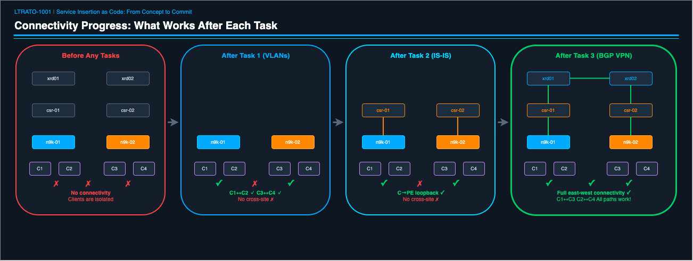
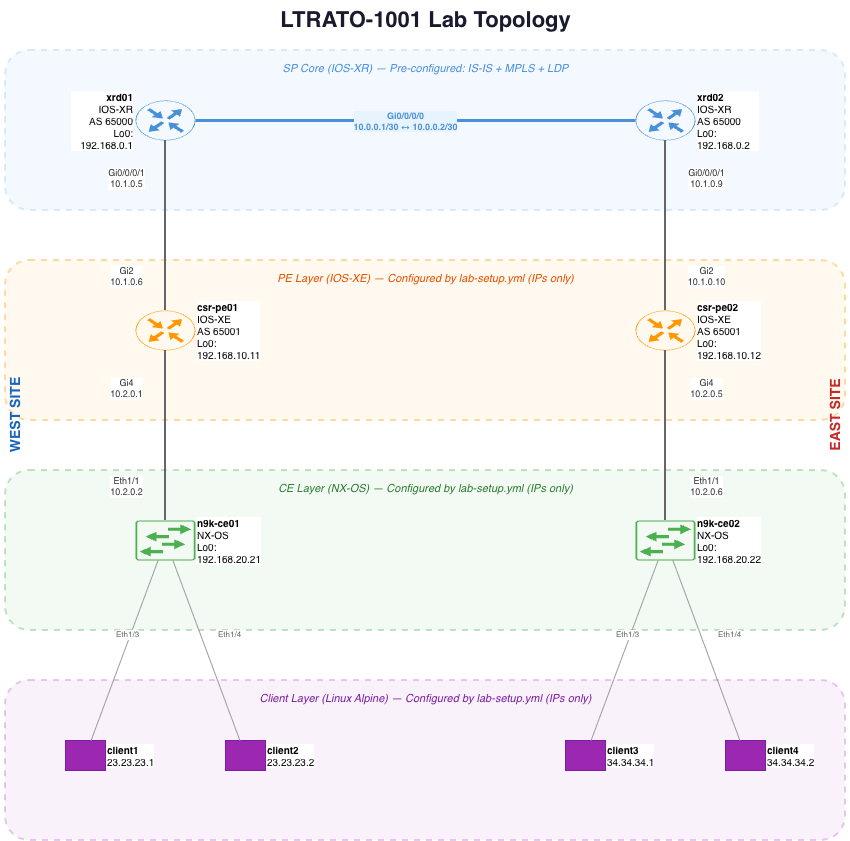

Getting Started¶
Complete these steps before starting Task 1. This sets up your environment and verifies everything is working.
What You Will Learn¶
- Ansible fundamentals: playbooks, plays, tasks, variables, modules
- Multi-vendor automation: configuring NX-OS, IOS-XE, IOS-XR, and Linux from a single workflow
- Infrastructure as Code: defining network state in YAML and HCL, not CLI commands
- Terraform state and drift: how Terraform tracks desired vs. actual state and remediates differences
- Terraform providers: using the CiscoDevNet IOS-XE and Docker providers to manage network and container resources
- Verification and testing: automating not just config push, but validation
- Version control: committing and pushing completed network configs to Git as part of the workflow
What You Will Build¶
| Task | Technology | Outcome |
|---|---|---|
| Task 1 | Ansible — L2 VLANs (NX-OS) | Clients on the same switch can communicate |
| Task 2 | Ansible — IS-IS routing (NX-OS + IOS-XE) | Clients can reach their local PE router |
| Task 3 | Ansible — BGP VPN / Inter-AS Option A (IOS-XR + IOS-XE) | Full east-west connectivity across the SP core |
| Task 4 | Terraform — IOS-XR via gNMI | Same XRd config as Task 3, expressed as Terraform resources |
| Task 5 | Terraform — Docker + IOS-XE (CiscoDevNet provider) | Deploy Infrastructure as Code (IaC) and remediate drift |
| Task 6 | Git | Commit and push all completed work to your student branch |
Tasks 1–3 build on each other — by Task 3, traffic crosses 6 network devices across 4 platforms. Tasks 4–5 are standalone and show a different IaC approach. Task 6 closes the loop by version-controlling everything you built.

Lab Topology¶
New to ContainerLab? The ContainerLab Primer explains how the topology is defined, started, and managed — worth a quick read before you start.

Your lab has 10 devices across 4 platforms:
| Layer | Devices | Platform | Role |
|---|---|---|---|
| SP Core | xrd01, xrd02 | IOS-XR | P routers — IS-IS, MPLS, BGP VPNv4 (pre-configured) |
| PE Edge | csr-pe01, csr-pe02 | IOS-XE | PE routers — eBGP to XRd, IS-IS to N9K |
| CE Access | n9k-ce01, n9k-ce02 | NX-OS | CE switches — VLANs, SVIs, IS-IS to CSR |
| Clients | client1-4 | Linux (Alpine) | Traffic endpoints for ping tests |
What's pre-configured? The XRd core routers come with IS-IS, MPLS LDP, and Loopback0 already configured in their startup configs. All other devices have baseline IP addressing on their uplink interfaces. You will configure everything else through automation.
Text topology diagram (click to expand)
┌──────────────┐ ┌──────────────┐
│ xrd01 │──── Gi0/0/0/0 ───│ xrd02 │ SP Core (IOS-XR)
│ AS 65000 │ │ AS 65000 │ IS-IS + MPLS
│ Lo0: .0.1 │ │ Lo0: .0.2 │ (pre-configured)
└──────┬───────┘ └──────┬───────┘
│ Gi0/0/0/1 10.1.0.5/6 │ Gi0/0/0/1 10.1.0.9/10
│ │
┌──────┴───────┐ ┌──────┴───────┐
│ csr-pe01 │ │ csr-pe02 │ PE Routers (IOS-XE)
│ AS 65001 │ │ AS 65001 │
│ Lo0: .10.11 │ │ Lo0: .10.12 │
└──────┬───────┘ └──────┬───────┘
│ Gi4 10.2.0.1/2 │ Gi4 10.2.0.5/6
│ │
┌──────┴───────┐ ┌──────┴───────┐
│ n9k-ce01 │ │ n9k-ce02 │ CE Switches (NX-OS)
│ Lo0: .20.21 │ │ Lo0: .20.22 │
└───┬──────┬───┘ └───┬──────┬───┘
Eth1/3 Eth1/4 Eth1/3 Eth1/4
│ │ │ │
┌──┴──┐ ┌──┴──┐ ┌──┴──┐ ┌──┴──┐
│ C1 │ │ C2 │ │ C3 │ │ C4 │ Linux Clients
│.23.1│ │.23.2│ │.34.1│ │.34.2│
└─────┘ └─────┘ └─────┘ └─────┘
Ready to connect to the lab? Head to Lab Access to get connected via VPN and VS Code before setting up your environment.
How the Lab Works¶
Every task follows the same pattern:
- Read — Understand what you're building and why
- Fill in — Open the playbook/config file and replace TODO values using the reference tables
- Run — Execute the playbook or Terraform command
- Verify — Check the output and confirm connectivity
- Understand — Read the output walkthrough to learn what happened
The playbooks are already written — you supply the data (variable values), not the logic (automation code). This mirrors real-world IaC practice where templates are reusable and operators fill in site-specific values.
If you get stuck: Solution files are in the
solutions/folder. Compare your playbook against the solution to find the difference. You can also ask your instructor for help.New to Ansible? Read the Ansible Quick Primer before starting Task 1. It takes about 5 minutes and covers everything you need to know.